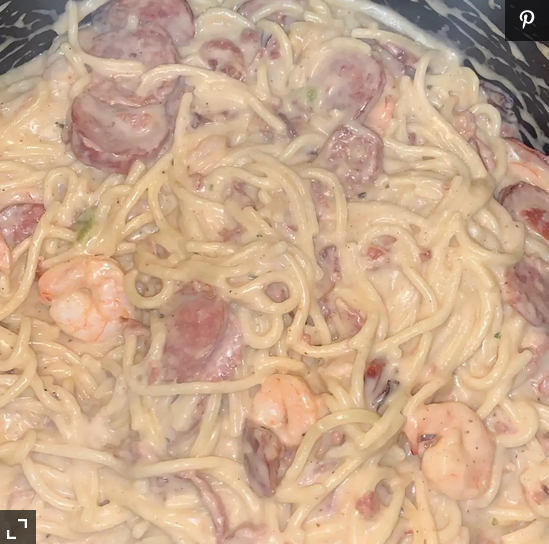

Fettucine Recipe

Description
This is an amazing recipe for making a hearty Fettucine Alfredo
Ingredients
- 8 ounces dry fettucine pasta
- 4.5 tablespoons butter
- 2.5 tablespoons all-purpose flour
- 2 cups milk
- 1 teaspoon minced garlic
- 5 drops hot pepper sauce
- .5 cup grated Parmesan cheese
Steps
- Cook pasta in a large pot of boiling salted water.
- Meanwhile, melt butter or margarine in a saucepan. Stir in flour. Whisk in milk, garlic, and hot sauce; stir until thickened. Stir in cheese.
- Drain pasta. Serve sauce over noodles